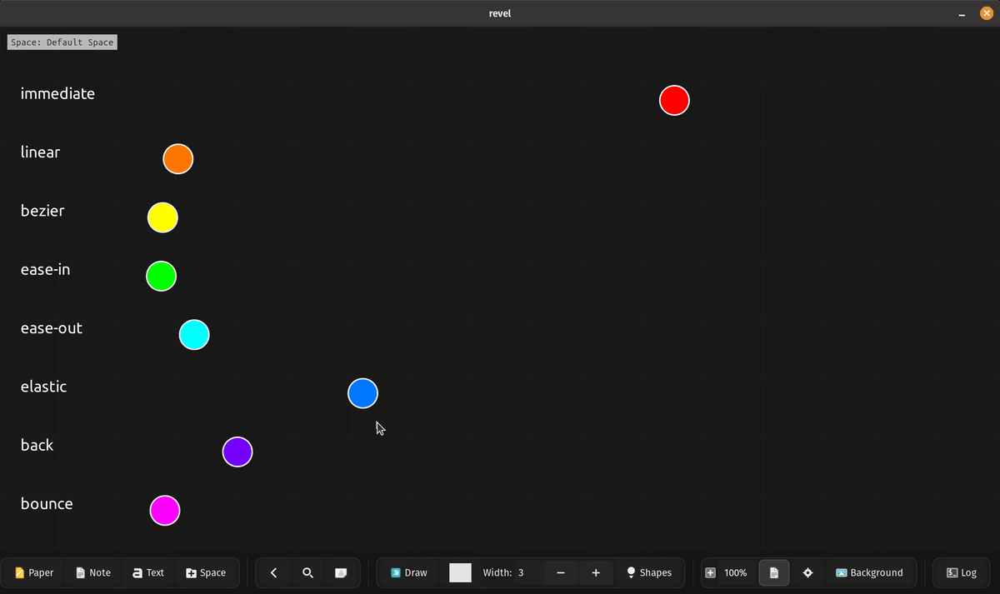
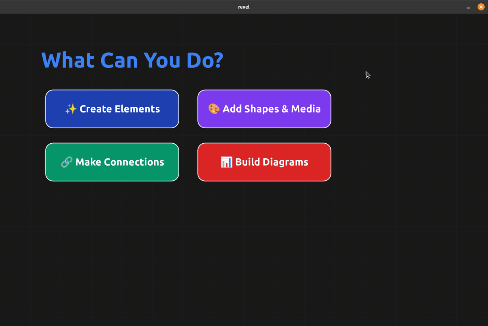
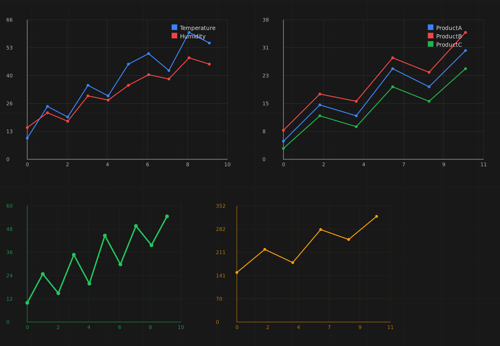

After optimizing Revel to handle 1 million cubes, I decided to add animations to make my notes more dynamic. What started as “let’s make shapes move smoothly” spiraled into building an entire reactive UI framework with variables, event handlers, and presentations. Then I realized something wild: the DSL (Domain Specific Language) is Turing-complete. You can implement cellular automata, build interactive quizzes, and create data visualizations, all inside a note-taking app.
This post documents how a simple animation system evolved into something that can theoretically compute anything.
Every complex system needs solid fundamentals. I implemented eight interpolation curves to make animations feel natural:
immediate: Instant jumps (no interpolation)
linear: Constant speed motion
bezier: Smooth professional ease-in-out
ease-in/ease-out: Acceleration/deceleration curves
bounce: Playful bouncing effect at the end
elastic: Spring-like oscillation
back: Overshoots then settles

The syntax follows a consistent pattern: what → where → when → how long → how
animation_mode
shape_create star circle "⭐" (100,100) (60,60) bg #ffd700 filled true
animate_move star (100,100) (500,300) 0.0 2.0 bezier
animate_resize star (60,60) (120,120) 0.0 2.0 elastic
animate_rotate star 0 360 0.0 2.0 linear
animate_color star #ffd700 #ff0000 2.0 1.5 bezierFive animation primitives cover everything: animate_move, animate_resize, animate_rotate, animate_color, and animate_appear/animate_disappear for opacity transitions. Multiple animations stack seamlessly. A shape can move, resize, rotate, and change color simultaneously.
Animations can play once (animation_mode) or loop forever (animation_mode cycled). Looping mode is perfect for breathing buttons, rotating logos, or any continuous visualization.
Once I had smooth animations, I realized this could be a presentation tool. Why not split scripts into slides?
I added animation_next_slide as a slide delimiter. Press Ctrl+Right Arrow to advance forward, Ctrl+Left Arrow to go back. Each slide starts fresh, previous elements clear automatically, but you maintain forward progress through your narrative.
# Slide 1: Title
animation_mode
canvas_background (0.08,0.08,0.12,1.0) true
text_create title "Welcome to Revel" (400,300) (400,100) text_color #60a5fa font "Ubuntu Bold 48"
animate_appear title 0.0 1.2 bezier
animation_next_slide
# Slide 2: Content reveals
text_create header "Key Features" (100,80) (800,60) text_color #3b82f6 font "Ubuntu Bold 36"
shape_create box1 roundedrect "Infinite Canvas" (120,200) (350,100) bg #1e40af filled true
shape_create box2 roundedrect "DSL Automation" (120,320) (350,100) bg #1e40af filled true
animate_appear box1 0.5 0.6 bezier
animate_appear box2 1.2 0.6 bezier
Each slide can have its own animation mode. You can mix static slides with animated ones, or create continuously looping visualizations. Hide the toolbar with Ctrl+Shift+T for distraction-free presentations.
Here’s where it gets interesting. Static presentations are nice, but what about interactive dashboards? What if elements could respond to clicks and update based on calculated values?
I added four variable types with full expression support:
int sales_q1 1000
int sales_q2 1500
# Computed from other variables
int total {sales_q1 + sales_q2}
# String interpolation
string status "Total: ${total}"
# Boolean expressions
bool is_profitable {total > 2000}
real growth_rate {(sales_q2 - sales_q1) / sales_q1}Then came event handlers. This is the magic that makes everything reactive:
shape_create button roundedrect "Click Me" (100,100) (150,60) bg #3b82f6 filled true
text_create counter_label "Clicks: 0" (100,200) (200,40) font "Ubuntu 20"
int clicks 0
on click button
set clicks {clicks + 1}
text_update counter_label "Clicks: ${clicks}"
end
on variable clicks
animate_color button #3b82f6 #10b981 0.0 0.3 bezier
endThe on click handlers fire when elements are clicked. The on variable handlers fire whenever a variable changes. This creates a reactive system where data changes automatically propagate through your UI.

int data_q1 1000
int data_q2 1500
int data_q3 1200
int data_q4 1800
int total {data_q1 + data_q2 + data_q3 + data_q4}
text_create title "Sales Dashboard" (400,50) (400,60) font "Ubuntu Bold 36"
text_create total_label "Total: ${total}" (400,120) (300,40) text_color #22c55e font "Ubuntu Bold 24"
# Bars positioned based on their values
shape_create bar1 rectangle "Q1" (150,{600 - data_q1/5}) (80,{data_q1/5}) bg #3b82f6 filled true
shape_create bar2 rectangle "Q2" (280,{600 - data_q2/5}) (80,{data_q2/5}) bg #8b5cf6 filled true
on click bar1
# Add $100 to Q1
set data_q1 {data_q1 + 100}
end
on variable data_q1
animate_resize bar1 (80,{data_q1/5}) 0.0 0.4 bezier
animate_move bar1 (150,{600 - data_q1/5}) 0.0 0.4 bezier
end
on variable total
text_update total_label "Total: ${total}"
endClick a bar → variable updates → animation triggers → total recalculates → label refreshes. Pure reactive data flow with smooth animations.

int current_temp 68
int min_temp 60
int max_temp 80
text_create readout "Temp: ${current_temp}°F" (200,320) (220,60) text_color #22d3ee font "Ubuntu Bold 28"
shape_create gauge_fill roundedrect "" (420,280) (120,{(current_temp - min_temp) * 10}) bg #22d3ee filled true
shape_create up_btn circle "▲" (640,220) (90,90) bg #10b981 filled true
shape_create down_btn circle "▼" (640,360) (90,90) bg #f97316 filled true
on click up_btn
set current_temp {current_temp + 1}
end
on click down_btn
set current_temp {current_temp - 1}
end
on variable current_temp
text_update readout "Temp: ${current_temp}°F"
animate_resize gauge_fill (120,{(current_temp - min_temp) * 10}) 0.0 0.35 bezier
endEvery button click updates the temperature, which triggers the gauge to animate smoothly to the new value. The readout updates in real-time. All declarative, all reactive.
Here’s the moment I realized this DSL had gone beyond a simple scripting language. I implemented Rule 110, a Turing-complete cellular automaton, in 69 lines of DSL code. When you click START, it dynamically generates 250,000 visual elements (500 cells × 500 generations) in real-time, creating a mesmerizing fractal pattern.

Rule 110 is proven to be capable of universal computation. If you can implement Rule 110, your language can theoretically compute anything. Here’s how it works in Revel:
canvas_background (0.05,0.05,0.08,1.0) false
# Current generation: 500 cells
int c[500] 0
# Seed with rightmost cell alive
set c[499] 1
# Next generation buffer
int next[500] 0
# Generation counter
int gen 0
# State machine: 0=idle, 1=draw, 2=compute, 3=copy
int step 0
shape_create btn rectangle "START" (400,20) (150,50) filled true bg (0.2,0.6,0.9,1.0)
text_create lbl "Gen: 0 / 500" (570,30) (150,30) text_color (0.8,0.8,0.8,1.0)
on click btn
# Launch the simulation
set step 1
endThe simulation runs through three phases, orchestrated by the step variable:
Phase 1: Draw (Render the current generation as a row of pixels)
on variable step == 1
set gen {gen + 1}
for i 0 499
shape_create r${gen}c${i} rectangle "" ({10+i*6},{120+gen*6}) (5,5) filled true bg {c[i],c[i],c[i],1.0}
end
text_update lbl "Gen: ${gen} / 500"
set step 2
endNotice the dynamic element creation: r${gen}c${i} creates unique IDs like r1c0, r1c1, r2c0, etc. The color expression {c[i],c[i],c[i],1.0} maps 0 to black, 1 to white.
Phase 2: Compute (Apply Rule 110’s pattern matching)
on variable step == 2
for i 1 498
set left {c[i - 1]}
set right {c[i + 1]}
# Convert neighbors to binary
set pattern {left * 4 + c[i] * 2 + right}
# Rule 110: survive if pattern is 1,2,3,5, or 6
set next[i] {(pattern == 1) + (pattern == 2) + (pattern == 3) + (pattern == 5) + (pattern == 6)}
end
set step 3
endThe boolean arithmetic trick: (pattern == 1) + (pattern == 2) + ... evaluates each comparison to 0 or 1, summing to 1 if any match. No conditional statements needed!
Phase 3: Copy and Loop (Swap buffers and continue)
on variable step == 3
for i 0 499
# Copy next generation to current
set c[i] {next[i]}
end
# Continue if more generations remain
set step {(gen < 500) * 1}
endThe clever continuation: {(gen < 500) * 1} evaluates to 1 (continue) or 0 (stop). When step becomes 1, the whole cycle repeats automatically.
This demonstrates computational universality. The DSL has:
Arrays for memory storage (int c[500])
Loops for iteration (for i 0 499)
Conditional logic through arithmetic expressions ({(gen < 500) * 1})
Dynamic code generation (r${gen}c${i})
Event-driven execution (on variable step == N)
These primitives combine to create a Turing-complete system. You could implement Conway’s Game of Life, a brainfuck interpreter, or any other computational system.
The grid example showcases the DSL’s ability to generate massive layouts programmatically:

canvas_background (0.1,0.1,0.15,1.0) false
int N 100
int grid_size N
real max_index {N-1}
int step 0
shape_create btn rectangle "Create Grid" (10,10) (150,40) filled true bg (0.3,0.6,0.9,1.0) text_color (1.0,1.0,1.0,1.0)
on click btn
set step 1
end
on variable step == 1
for row 0 max_index
for col 0 max_index
shape_create cell${row}${col} rectangle "" ({50+col*52},{70+row*52}) (48,48) filled true bg ({row/max_index},{col/max_index},0.5,1.0)
end
end
set step 2
endOne click creates 10,000 squares with a smooth color gradient. The color calculation ({row/max_index},{col/max_index},0.5,1.0) generates a red-green gradient across the grid. Each cell gets a unique ID like cell0c0, cell42c73, etc.
This demonstrates the power of programmatic generation. Creating complex layouts that would be impossible to build manually.
Presentations introduced a challenge: slides clear all elements when you navigate. But what if you need to track quiz scores across multiple questions?
Global variables persist across slides:
global int score 0
global int attempts 0
global string student_answer ""
# These survive animation_next_slide transitions
# This resets on each slide
int slide_local 100This enables multi-slide quizzes, progress tracking, and stateful presentations. Local variables reset per slide, globals persist throughout the entire session.

Manual slide navigation works for presentations, but quizzes should advance automatically when you answer correctly. Enter presentation_auto_next_if:
global int correct_total 0
global int planet_done 0
text_create prompt "Which planet is known as the Red Planet?" (360,200) (540,40)
shape_create option_mars roundedrect "Mars" (360,280) (280,60) bg #3b82f6 filled true
shape_create option_venus roundedrect "Venus" (360,360) (280,60) bg #3b82f6 filled true
on click option_mars
text_update feedback "✓ Correct! Mars is the Red Planet."
set correct_total {correct_total + 1}
set planet_done 1
end
on click option_venus
text_update feedback "✗ Incorrect. Try again."
end
on variable planet_done
# Auto-advance when correct
presentation_auto_next_if planet_done 1
end
animation_next_slideThe quiz tracks your score globally, provides feedback, and automatically advances when you select the right answer. You can also use text_bind to create text input fields that trigger progression when the user enters the correct string.
The included examples/quiz.dsl has three different question types: multiple choice buttons, text input, and card selection - all with automatic progression and score tracking.
Interactive learning requires more than just buttons. I added two powerful binding mechanisms:
Text Input - Bind a text element to a string variable:
string answer ""
text_create input_box "" (300,200) (400,50) bg #ffffff
text_bind input_box answer
on variable answer
# Check if answer is correct and auto-advance
presentation_auto_next_if answer "evaporation"
endWhen the user edits the text and presses Enter, the variable updates and triggers all on variable handlers.
Position Tracking - Track element positions for drag-and-drop activities:
string draggable_pos ""
shape_create box circle "üì¶" (100,100) (60,60) bg #f59e0b filled true
position_bind box draggable_pos
on variable draggable_pos
# Check if box was dragged to the target zone
# The draggable_pos variable contains "x,y" coordinates
endWhenever the element moves, the variable updates with the new coordinates as a string like "420,180". Perfect for drag-and-match educational activities.
Educational content and dashboards need charts. I added a plot shape type that renders line graphs from CSV-style data:
# Multi-line plot with automatic legend
shape_create sales_chart plot "line Q1 0,10 1,25 2,20 3,35 4,30\nline Q2 0,15 1,30 2,25 3,40 4,35\nline Q3 0,12 1,22 2,28 3,33 4,38" (100,100) (500,350) stroke_width 2
# Single line with Y values only (X auto-indexed)
shape_create temperature plot "10\n25\n15\n35\n20\n45" (100,400) (400,300) stroke_color #22c55e stroke_width 3
Plots auto-scale to fit the data range, display gridlines with actual values, and include legends for multi-line charts. Perfect for teaching statistics, visualizing experiment results, or creating live data dashboards.
Revel already supported images and MP4 videos. Adding MP3 playback was a natural extension:
audio_create track1 /path/to/song1.mp3 (0, 0) (200, 200)
audio_create track2 /path/to/song2.mp3 (0, 500) (200, 200)
audio_create track3 /path/to/song3.mp3 (500, 0) (200, 200)
connect track1 track2
connect track2 track3
# Loop back to create continuous playlist
connect track3 track1Audio files are stored directly in the SQLite database as BLOBs, just like images and videos. Connect audio elements with arrows to create playlists. When one track finishes, the next one starts automatically. Connect the last track back to the first for continuous looping.
This enables background music for presentations, audio cues for interactive demos, or educational content with narration.
With great power comes complexity. The DSL grew sophisticated enough that catching errors early became critical. I built a type checker that validates scripts before execution:
Variable type checking (int, real, bool, string)
Array bounds validation
Expression type compatibility
Command syntax validation
Element ID uniqueness
The type checker lives in src/dsl/dsl_type_checker.c and runs automatically when you execute scripts. Instead of cryptic runtime crashes, you get helpful error messages pointing to the exact line and describing what went wrong.
One of my favorite workflows: build something visually on the canvas, then click “Export to DSL” to generate the code.
I manually drew a triangle with lines and text labels. No code, just visual composition. Then exported it to DSL and got clean, readable code representing every element:

# Generated from canvas elements
shape_create line1 line "" (100,200) (150,80) bg #3b82f6 stroke 2
shape_create line2 line "" (100,200) (200,120) bg #8b5cf6 stroke 2
text_create label_a "a" (110,180) (40,30) text_color #ffffff font "Ubuntu 18"
text_create label_b "b" (150,210) (40,30) text_color #ffffff font "Ubuntu 18"
# ... 18 elements totalFull triangle.dsl available here
The exported DSL is clean and ready to modify. Duplicate it, parameterize values, or use it as a template. This bridges the gap between visual creation and programmatic generation.
The combination of infinite canvas, DSL automation, and interactive presentations opens up interesting possibilities:
Interview preparation: Visual algorithm explanations with animations showing how quicksort partitions arrays or how B-trees rebalance
System design practice: Interactive diagrams where clicking a load balancer shows request distribution
Project planning: Timelines with progress tracking and automated status updates
Learning tools: Quizzes that test understanding of distributed systems concepts
You can think visually, prototype interactively, then codify the patterns that work. I’m still exploring what’s possible with these capabilities.
The entire feature set is implemented in pure C using:
GTK4 for the UI layer (includes Cairo for 2D rendering)
SQLite3 for database storage (storing scripts, media as BLOBs, element properties)
GStreamer for video/audio playback
No framework bloat. No dependency hell. No bundled JavaScript runtime. Just direct systems programming that compiles to a ~488KB binary and will keep working for decades.
Building this reminded me why I love programming:
The DSL made everything composable. Animations + variables = reactive UIs. Variables + events = interactive quizzes. Loops + arrays + events = cellular automata. Each primitive combines with others to enable emergent complexity.
All the examples mentioned are included in the examples/ directory (tested on Linux):
git clone https://github.com/Dimchikkk/revel
cd revel
make
# Run the Turing-complete cellular automaton
./revel --dsl examples/rule110.dsl
# Generate a 10,000-element grid instantly
./revel --dsl examples/grid.dsl
# Try the interactive quiz with auto-progression
./revel --dsl examples/quiz.dsl
# Explore the sales dashboard
./revel --dsl examples/interactive_dashboard.dslCheck out DSL.md for the complete language reference.
I’m currently looking for a full-time software engineering role. If you’re working on interesting problems and think this kind of work resonates with what your team does, feel free to reach out: velo.app1@gmail.com
Links: